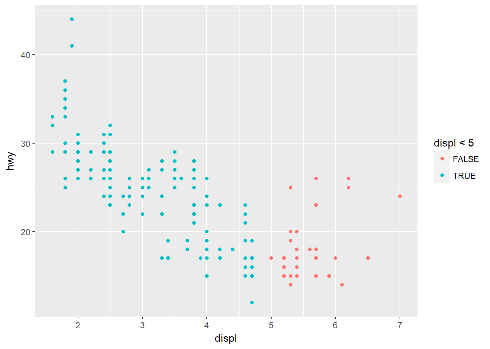
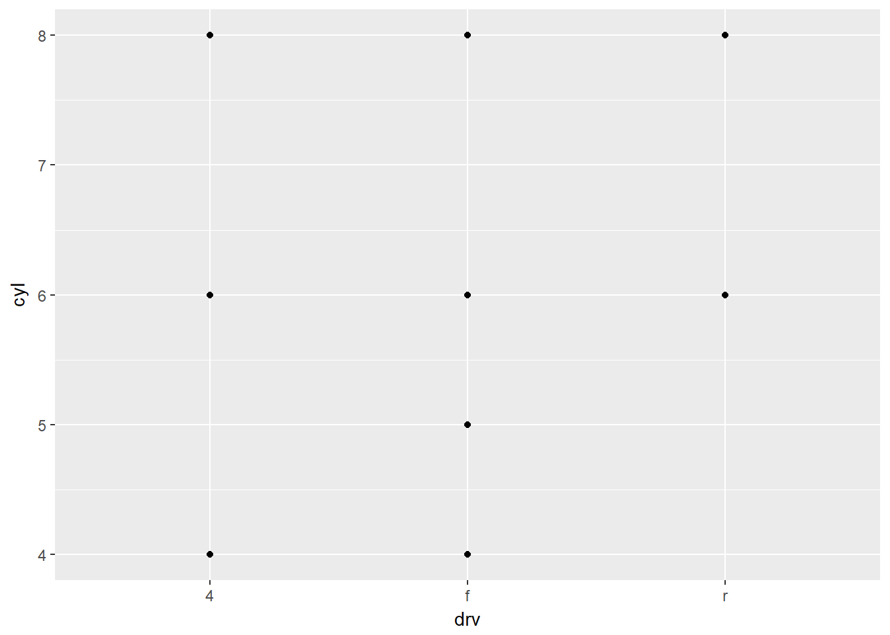
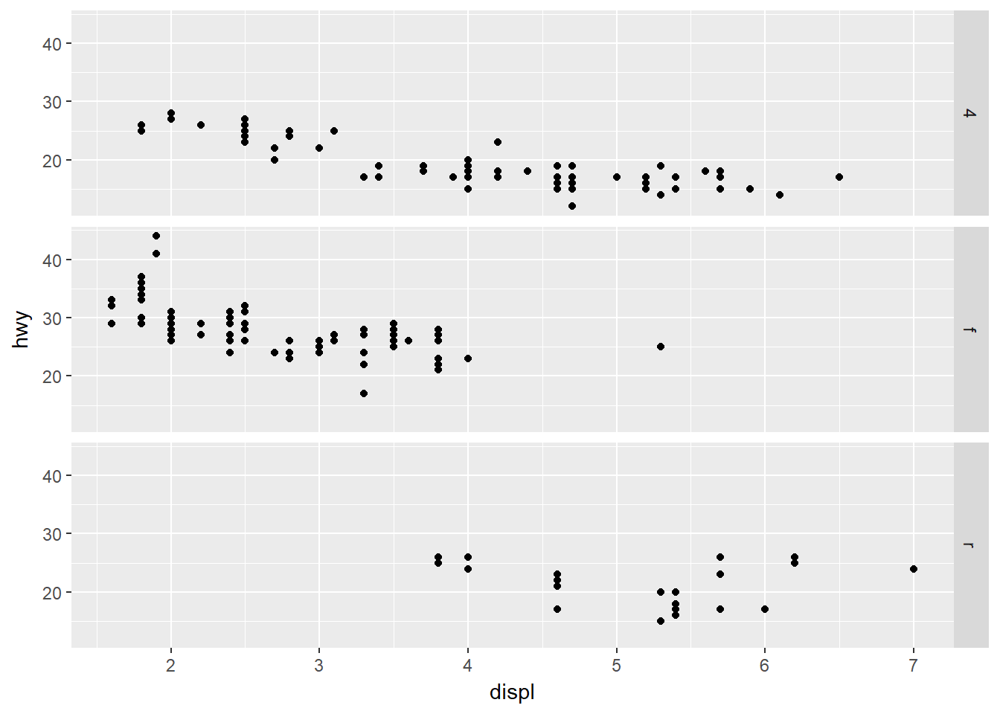
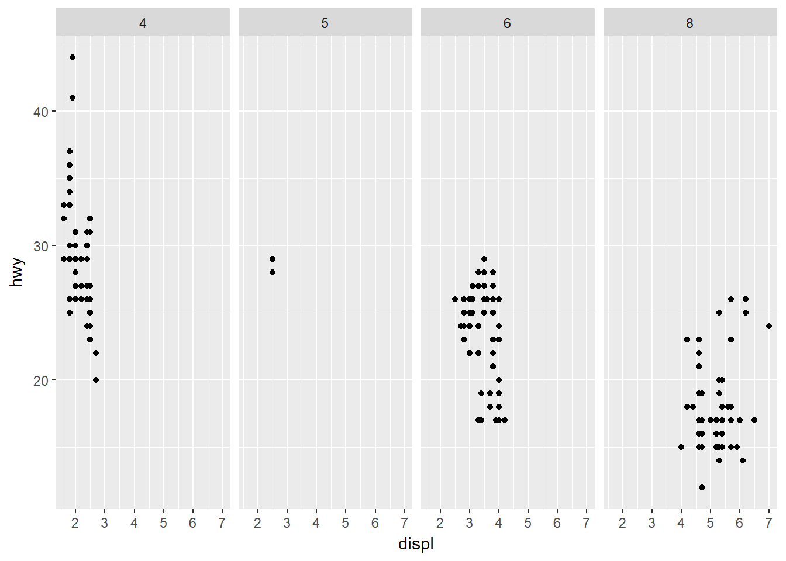
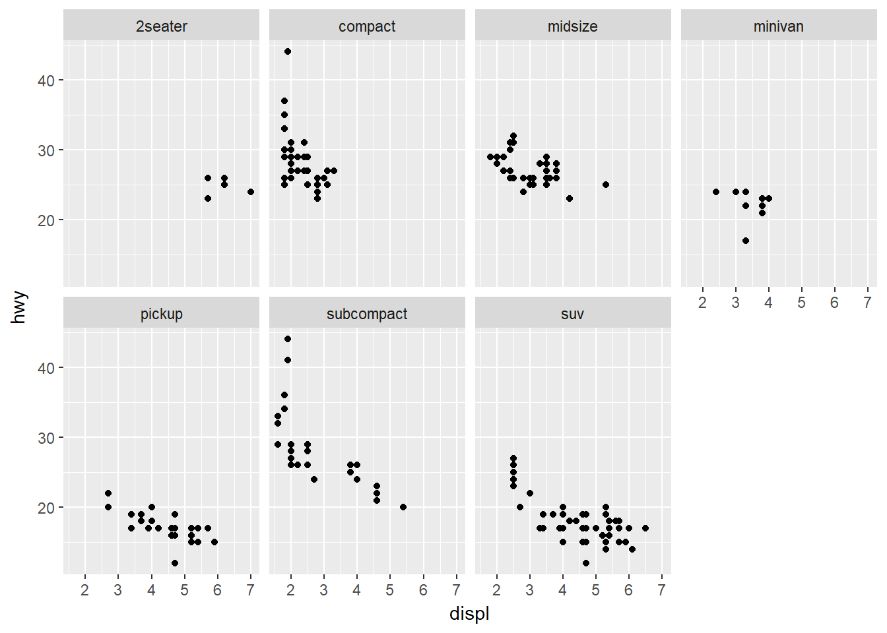
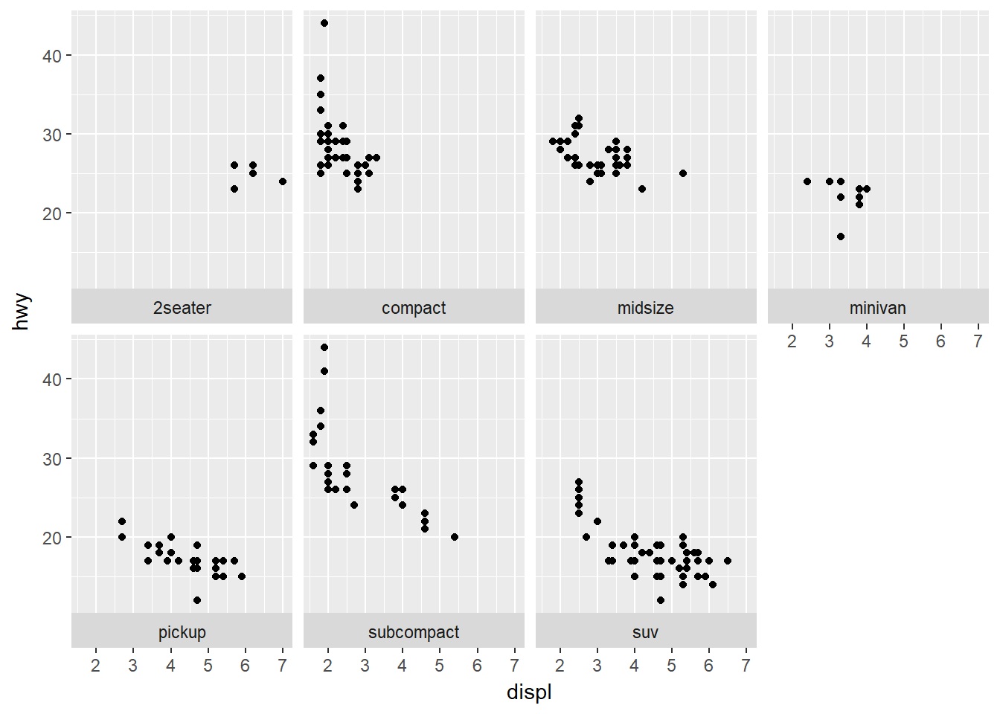
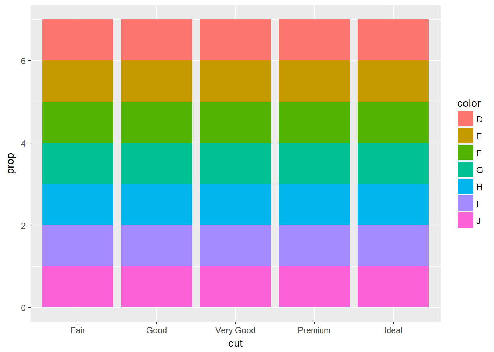
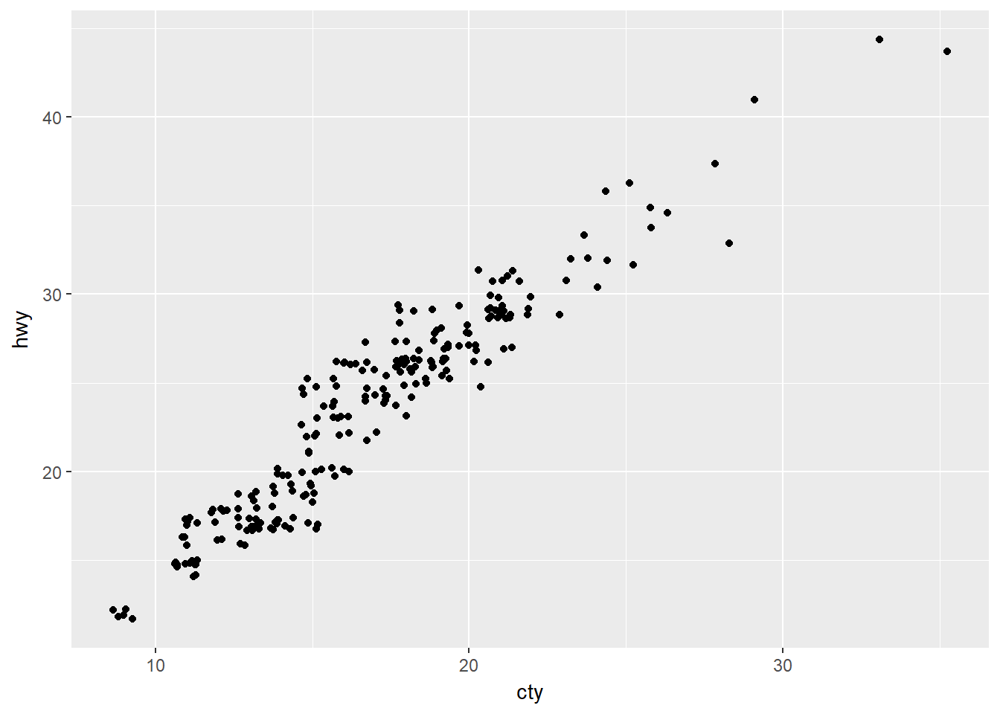

Visualización de Datos con ggplot2
if(!require(tidyverse)){
install.packages('tidyverse')
require(tidyverse)
} else{
require(tidyverse)
}
if(!require(maps)){
install.packages('maps')
require(maps)
} else{
require(maps)
}El paquete ggplot es uno de los sistemas más versátiles y elegantes para hacer gráficas en R. Para más detalles teóricos de ggplot se recomienda leer A Layered Grammar of Graphics.
Primeros pasos
Tratemos de responder a la siguiente pregunta: Cómo es la relación entre el tamaño del motor y la eficiencia de combustible? Es positiva? Negativa? Lineal? No lineal?
Primero se carga el ‘data.frame’ mpg con los datos de autos.
#mpgLas variables displ (tamaño del motor en litros) y hwy (eficiencia de combustible en la autopista en millas por galón) permitiran explorar la respuesta a la pregunta.
Creación de un ggplot
ggplot(data = mpg) + geom_point(mapping = aes(x = displ, y = hwy))
Una plantilla de gráfica sería: ggplot(data = ) +
Ejercicios
- Corra ggplot(data = mpg). Qué muestra?
ggplot(data = mpg)
- Cuántas filas hay en el conjunto de datos mtcars?
nrow(mtcars)## [1] 32Cuántas columnas?
ncol(mtcars)## [1] 11- Qué describe la variable drv? Lea la ayuda para mpg usando el comando ?mpg.
#?mpgdrv es una variable categórica que indica el tipo de tracción en las ruedas: f = tracción en las ruedas delanteras, r = tracción en las ruedas traseras, 4 = tracción en las cuatro ruedas.
- Haga un diagrama de dispersión de hwy vs. cyl.
ggplot(data = mpg) + geom_point(mapping = aes(x = cyl, y = hwy))
- Qué sucede si se hace un diagrama de dispersión de class vs. drv? Por qué este gráfico no es útil?
ggplot(data = mpg) + geom_point(mapping = aes(x = class, y = drv))Este gráfico no es útil porque solo muestra donde hay datos en una tabla de dos vías para variables categóricas.
Mapeos Estéticos
ggplot(data = mpg) + geom_point(mapping = aes(x = displ, y = hwy, color = class))Una Estética es una propiedad visual de los objetos en una gráfica, como por ejemplo el tamaño, la forma o el color de los puntos.
Veamos ahora el mismo ejemplo cambiando la Estética size:
ggplot(data = mpg) + geom_point(mapping = aes(x = displ, y = hwy, size = class))## Warning: Using size for a discrete variable is not advised.Cambiemos ahora la transparencia de los puntos con la Estética alpha:
ggplot(data = mpg) + geom_point(mapping = aes(x = displ, y = hwy, alpha = class))O la forma de los puntos con la Estética shape:
ggplot(data = mpg) + geom_point(mapping = aes(x = displ, y = hwy, shape = class))## Warning: The shape palette can deal with a maximum of 6 discrete values
## because more than 6 becomes difficult to discriminate; you have 7.
## Consider specifying shapes manually if you must have them.## Warning: Removed 62 rows containing missing values (geom_point).Las Estéticas se pueden configurar manualmente:
ggplot(data = mpg) + geom_point(mapping = aes(x = displ, y = hwy), color = "blue")
Note que esto se hace por fuera de la función aes().
Ejercicios
- Qué es incorrecto en el siguiente código? Por qué los puntos no son azules?
ggplot(data = mpg) + geom_point(mapping = aes(x = displ, y = hwy, color = "blue"))
Observe que la estética color se colocó dentro de la función aes() y eso no es correcto.
- Cuáles variables en mpg son categóricas? Cuáles son continuas? (Ayuda: ver ?mpg) Cómo puede ver esto al correr mpg?
#?mpgCategóricas: manufacturer, model, year, trans, drv, fl, class. Continuas: displ, cyl, cty, hwy.
mpg## # A tibble: 234 x 11
## manufacturer model displ year cyl trans drv cty hwy fl
## <chr> <chr> <dbl> <int> <int> <chr> <chr> <int> <int> <chr>
## 1 audi a4 1.8 1999 4 auto(l~ f 18 29 p
## 2 audi a4 1.8 1999 4 manual~ f 21 29 p
## 3 audi a4 2 2008 4 manual~ f 20 31 p
## 4 audi a4 2 2008 4 auto(a~ f 21 30 p
## 5 audi a4 2.8 1999 6 auto(l~ f 16 26 p
## 6 audi a4 2.8 1999 6 manual~ f 18 26 p
## 7 audi a4 3.1 2008 6 auto(a~ f 18 27 p
## 8 audi a4 quat~ 1.8 1999 4 manual~ 4 18 26 p
## 9 audi a4 quat~ 1.8 1999 4 auto(l~ 4 16 25 p
## 10 audi a4 quat~ 2 2008 4 manual~ 4 20 28 p
## # ... with 224 more rows, and 1 more variable: class <chr>Se puede identificar con el tipo de variable: las categóricas son tipo chr y las continuas pueden ser de tipo int o dbl.
- Dibuje una variable continua en color, tamaño y forma. Cómo se comportan estás estéticas para variables categóricas vs. variables continuas?
ggplot(data = mpg) + geom_point(mapping = aes(x = displ, y = hwy, color = cty))
Crea una paleta de colores.
ggplot(data = mpg) + geom_point(mapping = aes(x = displ, y = hwy, size = cty))Parece funcionar igual a que si fuera categórica ordinal aunque no es clara la leyenda en la formación de clases.
#ggplot(data = mpg) + geom_point(mapping = aes(x = displ, y = hwy, shape = cty))No funciona.
- Qué sucede si usted dibuja la misma variable para múltiples estéticas?
ggplot(data = mpg) + geom_point(mapping = aes(x = displ, y = hwy, color = class, size = class))## Warning: Using size for a discrete variable is not advised.Otro ejemplo:
ggplot(data = mpg) + geom_point(mapping = aes(x = displ, y = hwy, alpha=class, color = class, size = class))## Warning: Using size for a discrete variable is not advised.Aplica las tres estéticas, pero las tres dan la misma información.
- Qué hace la estética stroke? (Ayuda: use ?geom_point)
#?geom_pointstroke sirve para controlar el ancho del borde de algunos símbolos que se pueden usar para representar puntos en una gráfica. Se puede definir el ancho usando los valores de una variable numérica o usando un valor fijo. Por ejemplo usando la variable cyl:
ggplot(data = mpg) + geom_point(mapping = aes(x = displ, y = hwy, stroke = cyl), shape = 21)Veamos ahora otro ejemplo usando un valor fijo:
ggplot(data = mpg) + geom_point(mapping = aes(x = displ, y = hwy), stroke = 2, shape = 24)Con qué formas funciona?
Funciona con las formas de la 21 a la 25.
- Qué sucede si usted dibuja una estética para algo más que un nombre de variable, tal como aes(color = displ < 5)?
ggplot(data = mpg) + geom_point(mapping = aes(x = displ, y = hwy, color = displ < 5))
Queda la estética aplicada a una indicadora de si se cumple o no el criterio establecido.
Facetas
Las facetas es una forma de adicionar variables categóricas a una gráfica y consiste en crear subgráficas donde cada subgráfica muestra un subconjunto de los datos. hay dos formas de hacer esto. Si se quiere hacer facetas para una sola variable (que debería ser discreta) se usa facet_wrap(), por ejemplo:
ggplot(data = mpg) +
geom_point(mapping = aes(x = displ, y = hwy)) +
facet_wrap(~ class, nrow = 2)
Si lo que se quiere es realizar facetas para las combinaciones de dos variables se usa facet_wrap(), por ejemplo:
ggplot(data = mpg) +
geom_point(mapping = aes(x = displ, y = hwy)) +
facet_grid(drv ~ cyl)
Una variante del caso anterior es realizar facetas solo por filas o columnas, para lo cual se usa . en lugar del nombre de una de las variables, por ejemplo:
ggplot(data = mpg) +
geom_point(mapping = aes(x = displ, y = hwy)) +
facet_grid(. ~ cyl)
Ejercicios
- Qué sucede si usted hace facetas a una variable continua?
ggplot(data = mpg) +
geom_point(mapping = aes(x = displ, y = hwy)) +
facet_wrap(~ cty, nrow = 2)Realiza una gráfica para cada valor de la variable continua.
- Qué significan las celdas vacías en un gráfico con facet_grid(drv ~ cyl)?
Las celdas vacías significan que no hay datos en el subconjunto de datos definido por la correspondiente combinación de niveles de las dos variables.
Como se relacionan con este gráfico?
ggplot(data = mpg) +
geom_point(mapping = aes(x = drv, y = cyl))
Observe que el gráfico es un grid donde se marca con un punto donde hay datos, lo cual coincide con lo indicado en la gráfica con facet_grid(drv ~ cyl).
- Qué gráficas hace el siguiente código?
ggplot(data = mpg) +
geom_point(mapping = aes(x = displ, y = hwy)) +
facet_grid(drv ~ .)
ggplot(data = mpg) +
geom_point(mapping = aes(x = displ, y = hwy)) +
facet_grid(. ~ cyl)
La primera gráfica hace las facetas de la variable drv en las filas con ninguna variable en las columnas. La segunda gráfica hace las facetas de la variable cyl en las columnas con ninguna variable en las filas.
Que hace el .?
Indica en que dimensión (filas o columnas) no se tendrá ninguna variable.
- Considerando la primera gráfica de esta sección:
ggplot(data = mpg) +
geom_point(mapping = aes(x = displ, y = hwy)) +
facet_wrap(~ class, nrow = 2)
Cuáles son las ventajas de usar facetas en lugar de la estética color?
Ver el comportamiento separado de cada subconjunto de datos definido por la variable puesta en facetas.
Cuáles son las desventajas?
No veo desventajas.
Cómo podría cambiar el balance si se tiene un conjunto de datos más grande?
Con una base de datos mayor el gráfico usando la estética de color se vuelve difícil de leer.
- Lea la ayuda ?facet_wrap.
#?facet_wrapQué hace nrow?
Fija el número de filas para presentar las facetas de la variable class. Ejemplo:
ggplot(data = mpg) +
geom_point(mapping = aes(x = displ, y = hwy)) +
facet_wrap(~ class, nrow = 3)Qué hace ncol?
Fija el número de columnas para presentar las facetas de la variable class.
ggplot(data = mpg) +
geom_point(mapping = aes(x = displ, y = hwy)) +
facet_wrap(~ class, ncol = 4)
Qué otras opciones controlan el diseño de los paneles individuales?
scales: permite definir las escalas de los paneles individuales, por defecto scales=“fixed”. Ejemplo:
ggplot(data = mpg) +
geom_point(mapping = aes(x = displ, y = hwy)) +
facet_wrap(~ class, ncol = 4, scales = 'free') # otras opciones: 'free_x', 'free_y'as.table: decide si las facetas se presentan como una tabla con los valores más altos en la parte inferior derecha, por defecto as.table = T. Ejemplo:
ggplot(data = mpg) +
geom_point(mapping = aes(x = displ, y = hwy)) +
facet_wrap(~ class, ncol = 4, as.table = F)strip.position: indica donde se colocan las etiquetas, por defecto strip.position = ‘top’ colocándolas arriba. Ejemplo:
ggplot(data = mpg) +
geom_point(mapping = aes(x = displ, y = hwy)) +
facet_wrap(~ class, ncol = 4, strip.position = 'bottom') # otras opciones: 'left', 'right'. drop: decide si muestra todos los niveles del factor no usados en los datos, por defecto drop = T. Ejemplo:
ggplot(data = mpg) +
geom_point(mapping = aes(x = displ, y = hwy)) +
facet_wrap(~ class, ncol = 4, drop = F)
dir: indica la dirección que siguen las gráficas, por defecto dir = ‘h’. Ejemplo
ggplot(data = mpg) +
geom_point(mapping = aes(x = displ, y = hwy)) +
facet_wrap(~ class, ncol = 4, dir = 'v')Por qué facet_grid() no tiene nrow y ncol?
Porque los valores para esos parámetros son tomados automáticamente del número de niveles de las variables que se combinan.
- Cuando se usa facet_grid() usted debería colocar la variable con más niveles únicos en las columnas. Por qué?
Porque hay más espacio para graficar en las columnas que en las filas.
Geometric Objects
En ggplot2 se pueden usar diferentes objetos visuales para representar al mismo conjunto de datos, a ellos se les conoce como geomas. Un geoma es un objeto geométrico que es usado por una gráfica para representar los datos. Veamos un diagrama de dispersión de hwy vs. displ, que usa geom_point:
# left
ggplot(data = mpg) +
geom_point(mapping = aes(x = displ, y = hwy))
Ahora veamos una representación diferente que grafica una curva suavizada de hwy vs. displ junto con intervalos de confianza, que usa geom_smooth:
# right
ggplot(data = mpg) +
geom_smooth(mapping = aes(x = displ, y = hwy))## `geom_smooth()` using method = 'loess'
Una variante, donde se hacen ajustes en cada nivel de la variable categórica drv:
ggplot(data = mpg) +
geom_smooth(mapping = aes(x = displ, y = hwy, linetype = drv))## `geom_smooth()` using method = 'loess'ggplot2 proporciona más de 30 geomas, y un paquetes de extensión proporcionan aún más, ver https://www.ggplot2-exts.org para una muestra. Para un resumen detallado consulte la hoja de trucos de ggplot2, que se puede encontrar en http://rstudio.com/cheatsheets. Para más detaller de un geoma use la ayuda ?geom_smooth.
Veamos nuevamente el uso de geom_smooth:
ggplot(data = mpg) +
geom_smooth(mapping = aes(x = displ, y = hwy))## `geom_smooth()` using method = 'loess'para estos geomas se puede asignar la estética group a una variable categórica para dibujar múltiples objetos. Por ejemplo:
ggplot(data = mpg) +
geom_smooth(mapping = aes(x = displ, y = hwy, group = drv))## `geom_smooth()` using method = 'loess'O tambien se puede asignar la estética color a una variable categórica dando como resultado:
ggplot(data = mpg) +
geom_smooth(mapping = aes(x = displ, y = hwy, color = drv), show.legend = FALSE)## `geom_smooth()` using method = 'loess'
Si se quieren agregar varios geomas a una gráfica basta con adicionarlos usando el signo +, así:
ggplot(data = mpg) +
geom_point(mapping = aes(x = displ, y = hwy)) +
geom_smooth(mapping = aes(x = displ, y = hwy))## `geom_smooth()` using method = 'loess'
Observe que hacer esto puede duplicar la cantidad de código (se repite aes(x = displ, y = hwy) en ambos geomas), para lo cual se usa la siguiente solución:
ggplot(data = mpg, mapping = aes(x = displ, y = hwy)) +
geom_point() +
geom_smooth()## `geom_smooth()` using method = 'loess'
donde lo que se estaba repitiendo se deja en la función ggplot, quedando fijo para todos los geomas adicionados. Esto no impide que podamos agregar otras estéticas en los geomas adicionados (diferentes capas). Por ejemplo:
ggplot(data = mpg, mapping = aes(x = displ, y = hwy)) +
geom_point(mapping = aes(color = class)) +
geom_smooth()## `geom_smooth()` using method = 'loess'La misma idea aplica si usted quiere especificar diferentes datos en cada capa. Por ejemplo, usemos una línea suavizada solo para vehículos de la clase sub-compactos:
ggplot(data = mpg, mapping = aes(x = displ, y = hwy)) +
geom_point(mapping = aes(color = class)) +
geom_smooth(
data = filter(mpg, class == "subcompact"),
se = FALSE
)## `geom_smooth()` using method = 'loess'Ejercicios
- Cuál geoma debería usarse para un gráfico de líneas?
geom_line
Para un boxplot?
geom_boxplot
Para un histograma?
geom_histogram
Para un gráfico de áreas?
geom_area
- Corra este código en su cabeza y prediga como lucirá la salida. Luego, corra el código en R y chequee sus predicciones:
ggplot(data = mpg, mapping = aes(x = displ, y = hwy, color = drv)) +
geom_point() +
geom_smooth(se = FALSE)## `geom_smooth()` using method = 'loess'
wow… buenas predicciones…
- Qué hace show.legend = FALSE?
Quita la leyenda de la gráfica.
Que sucede si lo remueve?
Muestra la leyenda de la gráfica.
Por qué cree usted que lo usé antes en este capítulo?
Supongo que la usó para que las gráficas fueran comparables.
- Qué hace el argumento se para geom_smooth()?
Indica si la línea suavisada usando el método loess para los datos del ggplot se graficará con (se = T) o sin (se = F) los respectivos Intervalos de Confianza.
- Lucirán diferentes las dos gráficas siguientes? Por qué/Por qué no?
ggplot(data = mpg, mapping = aes(x = displ, y = hwy)) +
geom_point() +
geom_smooth()## `geom_smooth()` using method = 'loess'ggplot() +
geom_point(
data = mpg,
mapping = aes(x = displ, y = hwy)
) +
geom_smooth(
data = mpg,
mapping = aes(x = displ, y = hwy)
)## `geom_smooth()` using method = 'loess'
No lucen diferentes, por que los códigos son equivalentes.
- Recree el código R necesario para generar las siguientes gráficas.
ggplot(data = mpg, mapping = aes(x = displ, y = hwy)) +
geom_point(size = 5) +
geom_smooth(size = 3, se = F)## `geom_smooth()` using method = 'loess'ggplot(data = mpg, mapping = aes(x = displ, y = hwy)) +
geom_smooth(mapping=aes(group = drv), size = 3, se = F) +
geom_point(size = 5)## `geom_smooth()` using method = 'loess'ggplot(data = mpg, mapping = aes(x = displ, y = hwy, color = drv)) +
geom_point(size = 5) +
geom_smooth(size = 3, se = F)## `geom_smooth()` using method = 'loess'ggplot(data = mpg, mapping = aes(x = displ, y = hwy)) +
geom_point(mapping=aes(color = drv),size = 5) +
geom_smooth(size = 3, se = F)## `geom_smooth()` using method = 'loess'ggplot(data = mpg, mapping = aes(x = displ, y = hwy)) +
geom_point(mapping=aes(color = drv),size = 5) +
geom_smooth(mapping=aes(linetype = drv), size = 3, se = F)## `geom_smooth()` using method = 'loess'ggplot(data = mpg, mapping = aes(x = displ, y = hwy)) +
geom_point(shape = 21, colour = "white", stroke = 10) +
geom_point(mapping=aes(color = drv), size = 7)Transformaciones Estadísticas
Para ilustrar este tema considere una gráfica de barras para el conjunto de datos diamonds donde el número total de diamntes se agrupa por tipo de corte, variable cut.
ggplot(data = diamonds) + geom_bar(mapping = aes(x = cut))Observe que el eje Y muestra una varible count que no está en el conjunto de datos, de manera que algunos gráficos calculan nuevos valores para graficar.
- Las gráficas de barras, histogramas y polígonos de frecuencias discretizan los datos en intervalos y luego grafican los conteos de cada intervalo.
- Los suavizadores ajustan un modelo a los datos y grafican las predicciones del modelo.
- Los boxplots calculan un resumen robusto de la distribución y muestran una caja con formato especial.
El algoritmo usado para calcular los nuevos valores se denomina stat (statistical transformation). Para determinar cuál es la stat por defecto para un geoma particular basta con mirar la ayuda de éste último. Por ejemplo, mirando la ayuda ?geom_bar se observa que la stat por defecto para geom_bar() es count y en la sección de la ayuda “Computed variables” indica que se calculan dos nuevas variables count y prop. Las stats y los geoms se pueden usar de forma intercambiable, veamos como se puede replicar la gráfica de barras anterior esta vez usando stat_count() en lugar de geom_bar():
ggplot(data = diamonds) + stat_count(mapping = aes(x = cut))
- A continuación se muestra un ejemplo donde se quiere cambiar la stat por defecto de geom_bar() de count a identity cuando en el conjunto de datos la variable y ya contiene los conteos:
demo <- tribble(
~a, ~b,
"bar_1", 20,
"bar_2", 30,
"bar_3", 40
)
ggplot(data = demo) +
geom_bar(mapping = aes(x = a, y = b), stat = "identity")
- Otra posibilidad es cambiar el mapeo por defecto de variables transformadas para estéticas. Por ejemplo si se quiere mostrar una gráfica de barras de proporciones en lugar de conteos:
ggplot(data = diamonds) +
geom_bar(
mapping = aes(x = cut, y = ..prop.., group = 1)
)- Ahora, usted puede interés en las transformaciones estadísticas. Por ejemplo, usemos stat_summary(), la cual resume los valores de y para cada valor único x:
ggplot(data = diamonds) +
stat_summary(
mapping = aes(x = cut, y = depth),
fun.ymin = min,
fun.ymax = max,
fun.y = median
)Ejercicios
- Cuál es el geoma por defecto asociado con stat_summary()?
geom_pointrange
Cómo podría reescribir la gráfica anterios para usar geom_pointrange en lugar de la función stat?
ggplot(data = diamonds) +
geom_pointrange(
mapping = aes(x = cut, y = depth),
fun.ymin = min,
fun.ymax = max,
fun.y = median,
stat = 'summary')
- Qué hace geom_col()? Cómo se diferencia de geom_bar()? geom_col grafica barras cuya altura representa los valores en los datos. A diferencia de geom_bar que grafica barras cuya altura es proporcional al número de casos en cada grupo. Ejemplo:
ggplot(data = demo) +
geom_col(mapping = aes(x = a, y = b))- La mayoría de los geomas y stats vienen en pares que son casi siempre usados en sintonía. Lea la ayuda y haga una lista de todos los pares. Qué tienen en común?
| geom | Useful stats (default in bold) | Default position adjustment |
|---|---|---|
| blank | identity | identity |
| abline | abline | identity |
| abline | identity | identity |
| hline | hline | identity |
| hline | identity | identity |
| vline | vline | identity |
| vline | identity | identity |
| text | identity | identity |
| point | identity | identity |
| jitter | identity | jitter |
| segment | identity | identity |
| line | identity | identity |
| bar | identity | stack |
| bar | bin | stack |
| histogram | alias for geom_bar | |
| area | identity | stack |
| ribbon | identity | identity |
| linerange | identity | identity |
| pointrange | identity | identity |
| errorbar | identity | identity |
| errorbarh | identity | identity |
| crossbar | identity | identity |
| boxplot | identity | dodge |
| boxplot | boxplot | dodge |
| path | identity | identity |
| polygon | identity | identity |
| rect | identity | identity |
| rug | identity | identity |
| step | identity | identity |
| bin2d | identity | identity |
| bin2d | bin2d | identity |
| tile | identity | identity |
| hex | identity | identity |
| hex | binhex | identity |
| density | identity | identity |
| density | density* | identity |
| density2d | identity | identity |
| density2d | density2d | identity |
| contour | identity | identity |
| contour | contour | identity |
| freqpoly | identity | identity |
| freqpoly | bin | identity |
| quantile | identity | identity |
| quantile | quantile | identity |
| smooth | identity | identity |
| smooth | smooth | identity |
*: Las stats en negrilla son las por defecto.
La mayoria de geomas comparten el nombre de su stat, e.g. geom_contour() <-> stat_contour().
- Cuáles variables calcula stat_smooth()?
- y: valor predicho
- ymin: límite inferior del IC puntual para la media
- ymax: límite superior del IC puntual para la media
- se: error estándar de y
Cuáles parámetros controlan su comportamiento?
- method: indica el método de suavizamiento a usar
- formula: especifica una formula para ser usada en el suavizamiento
- se: especifica si se muestran o no los IC’s
- n: número de puntos a ser evaluados por el suavizador
- span: controla el suavizado
- level: especifica el nivel de confianza
- En la gráfica de barras de proporciones se necesita colocar group = 1. Por qué?
La estética group en geom_bar, por defecto agrupa por los valores de la variable x, de manera que la proporción de diamantes cortados en cualquier categoría con respecto a la misma categoría siempre será el 100%. Por eso es necesario especificar group = 1, que indica que las proporciones se tomarán respecto del total de diamantes cortados.
En otras palabras cuál es el problema con estos dos gráficos?
ggplot(data = diamonds) +
geom_bar(mapping = aes(x = cut, y = ..prop..))ggplot(data = diamonds) +
geom_bar(
mapping = aes(x = cut, fill = color, y = ..prop..)
)
En la primera gráfica se toma el valor por defecto para la estética group con el resultado antes discutido.
En la segunda gráfica al especificar el relleno con los valores de la variable color, la estética group por defecto considera los grupos formados por las combinaciones de los niveles de variables categóricas, quedando en cada grupo de cut los siete grupos de color (35 grupos en total), pero las proporciones las calcula para los diamantes en cada grupo con respecto a los diamantes en cada grupo, de manera que siempre dan el 100%.
Ajustes de posición
Las gráficas de barras de pueden colorear usando la estética color o la más útil fill:
ggplot(data = diamonds) +
geom_bar(mapping = aes(x = cut, color = cut))ggplot(data = diamonds) +
geom_bar(mapping = aes(x = cut, fill = cut))Veamos que pasa cuando se asocia la estética fill a una variable, como clarity: las barras son automáticamente apiladas:
ggplot(data = diamonds) +
geom_bar(mapping = aes(x = cut, fill = clarity))Cada rectángulo coloreado representa una combinación de cut y clarity. El apilado es realizado automaticamente por por el ajuste de posición especificado por el argumento position. Si no se quieren barras apiladas, se pueden usar una de las otras tres opciones:
- position = ‘identity’: colocará cada objeto exactamente donde cae en el contexto de la gráfica. Esto no es útil para barras puesto que quedan superpuestas, para ver esto se requiere algo de transparencia usando alpha pequeño o sin relleno (fill = NULL). Por ejemplo, usando alpha:
ggplot(
data = diamonds,
mapping = aes(x = cut, fill = clarity)
) +
geom_bar(alpha = 1/5, position = "identity")o usando fill = NULL:
ggplot(
data = diamonds,
mapping = aes(x = cut, color = clarity)
) +
geom_bar(fill = NA, position = "identity")position = ‘identity’ es más útil en geomas en 2D como geom_point, para el cual es la posición por defecto.
- position = ‘fill’: consiste en un apilado haciendo que las barras apiladas tengan la misma altura, permitiendo comparar fácilmente las proporciones entre grupos. Por ejemplo:
ggplot(data = diamonds) +
geom_bar(
mapping = aes(x = cut, fill = clarity),
position = "fill"
)- position = ‘dodge’: coloca los objetos superpuestos directamente al lado del otro, permitiendo comparar fácilmente valores individuales. Por ejemplo:
ggplot(data = diamonds) +
geom_bar(
mapping = aes(x = cut, fill = clarity),
position = "dodge"
)Hay otro tipo de ajuste que no es útil para gráficas de barras pero que puede ser muy útil para diagramas de dispersión. Recuerde el primer diagrama de dispersión.
ggplot(data = mpg) +
geom_point(mapping = aes(x = displ, y = hwy))
Notó que la gráfica solo muestra 126 puntos aún cuando hay 234 observaciones en el conjunto de datos?. Esto ocurre por que los valores están redondeados, de manera que hay puntos superpuestos. Esto no permite visualizar la masa de los datos. Será que los valores superpuestos se dispersan equitativamente por la gráfica, o hay una combinación de las variables que contiene los 109 valores ocultos?. Una solución para esto es usar position = ‘jitter’: que adiciona un pequeño ruido aleatorio a cada punto. Veamos:
ggplot(data = mpg) +
geom_point(
mapping = aes(x = displ, y = hwy),
position = "jitter"
)Agregar aleatoriedad hace que tu gráfica sea menos precisa a escalas pequeñas, pero a gran escala, hace que tu gráfica sea más reveladora. Esta operación puede ser tan útil que ggplot2 abrevió geom_point(position = “jitter”) en geom_jitter().
Para más información sobre los ajustes de posición use ?position_dodge, ?position_fill, ?position_identity, ?position_jitter y ?position_stack.
Ejercicios
- Cuál es el problema de esta gráfica?
ggplot(data = mpg, mapping = aes(x = cty, y = hwy)) +
geom_point()La distribución de los puntos que se asemeja a una malla indica que hay puntos superpuestos.
Como podría mejorarla?
ggplot(data = mpg, mapping = aes(x = cty, y = hwy)) +
geom_jitter()
- Cuáles parámetros de geom_jitter() controlan la cantidad de variación?
width y height
- Compare y contraste geom_jitter() con geom_count().
Veamos el mismo ejemplo usado antes para geom_jitter usando ahora geom_count:
ggplot(data = mpg, mapping = aes(x = cty, y = hwy)) +
geom_count()
- Cuál es el ajuste de posición por defecto para geom_boxplot()?
dodge
Cree una visualización del conjunto de datos mpg que lo demuestre.
ggplot(data = mpg) +
geom_boxplot(
mapping = aes(x = drv, y = cty), fill = 'blue'
)Sistemas coordenados
Esto es quizás lo más complejo de ggplot2. El sistema coordenado por defecto es el cartesiano. Hay otros tipos de sistemas coordenados que ocasionalmente pueden ser útiles:
- coord_flip() intercambia los ejes x e y, que puede ser util para obtener boxplots horizontales, o cuando se tienen etiquetas largas que se superponen en el eje x. Por ejemplo:
ggplot(data = mpg, mapping = aes(x = class, y = hwy)) +
geom_boxplot()ggplot(data = mpg, mapping = aes(x = class, y = hwy)) +
geom_boxplot() +
coord_flip()- coord_quickmap(): establece la razón de aspecto apropiadamente para mapas, lo cual es importante para datos espaciales. Por ejemplo:
#nz <- map_data("nz")
#ggplot(nz, aes(long, lat, group = group)) +
#geom_polygon(fill = "white", color = "black")#ggplot(nz, aes(long, lat, group = group)) +
#geom_polygon(fill = "white", color = "black") +
#coord_quickmap()- coord_polar(): usa coordenadas polares. Un ejemplo de su uso es revelar la conección entre las gráficas de barras y una gráfica Coxcomb:
bar <- ggplot(data = diamonds) +
geom_bar(
mapping = aes(x = cut, fill = cut),
show.legend = FALSE,
width = 1
) +
theme(aspect.ratio = 1) +
labs(x = NULL, y = NULL)bar + coord_flip()bar + coord_polar()Ejercicios
- Convierta una gráfica de barras apiladas en un diagrama de torta usando coord_polar().
p <- ggplot(data = diamonds) +
geom_bar(
mapping = aes(x = cut, fill = clarity),
position = "fill"
)p + coord_polar()- Qué hace labs()? Lea la ayuda.
Sirve para modificar las etiquetas de los ejes, de la leyenda y de la gráfica.
- Cuál es la diferencia entre coord_quickmap() y coord_map()?
Ambos sistemas de coordenadas sirven para proyectar una porción de la tierra pero coord_quickmap se usa cuando se está cerca al ecuador como una aproximación de lo que hace coord_map, ya que este proceso en general requieres una computación considerable.
- Qué le dice la siguiente gráfica acerca de la relación entre las millas por galón en la ciudad (cty) y en la autopista (hwy)?
ggplot(data = mpg, mapping = aes(x = cty, y = hwy)) +
geom_point() +
geom_abline() +
coord_fixed()
Que las mpg en la ciudad siempre son menores que en la autopista.
Por qué es importante coord_fixed()?
Porque hace que los ejes x e y tengan la misma relación de aspecto.
Qué hace geom_abline()?
Traza por defecto una recta imagen y = x.
La gramática por capas de las gráficas
Se trata de una plantilla para hacer gráficas en ggplot2 donde se resume todo lo aprendido en este capítulo:
ggplot(data = <DATA>) +
<GEOM_FUNCTION>(
mapping = aes(<MAPPINGS>),
stat = <STAT>,
position = <POSITION>
) +
<COORDINATE_FUNCTION> +
<FACET_FUNCTION>